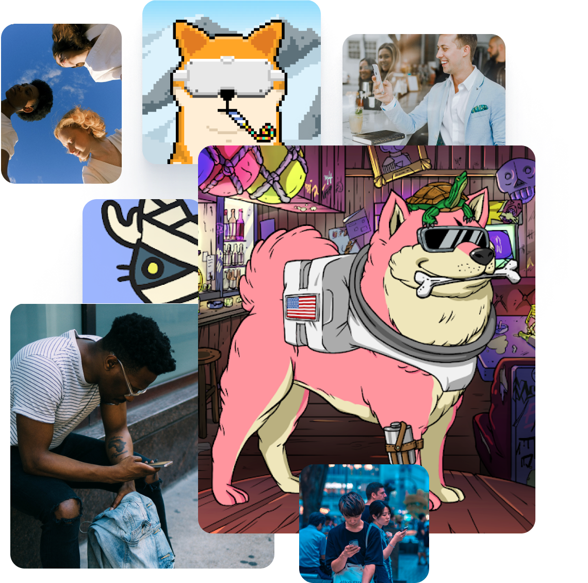
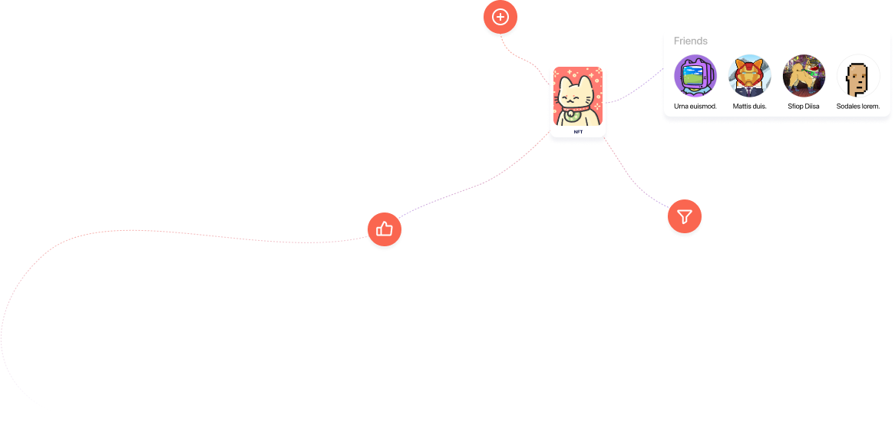

<div class="possibilities" id="possibilities">
    <div class="container possibilities-blok">
        <h2>Ваши возможности в социальной сети <span>META NFT</span> </h2>
        <div class="possibilities-blok_item">

            <div class="possibilities-blok_item_text">
                <picture>
                    <source media="(max-width:765px)" srcset="img/right@1.png">
                    <source media="(max-width:1120px)" srcset="img/@right.png">
                    
                </picture>
                <div>
                    <p>Голосуй за обновления платформы</p>
                    <span>
                        За свое активное участие в жизни проекта MetaNFT пользователи также смогут наращивать силу голоса и голосовать за улучшения, обновления и подходы для дальнейшего развития платформы.
                    </span>
                </div>
            </div>

            <div class="possibilities-blok_item_text">
                <div>
                    <p>
                        Добавляй NFT в свой профиль и смотри NFT интересных тебе людей
                    </p>
                    <span>
                        Социальная сеть MetaNFT и приложение дают возможность публичным личностям создавать свои профили и генерировать свои уникальные NFT за секунды, чтобы продвигать их и монетизировать. Любой пользователь MetaNFT может наблюдать за коллекциями NFT интересных ему личностей, покупать их NFT, создавать личную коллекцию, делиться ей с друзьями и монетизировать свой профиль.
                    </span>
                </div>
                
                <div>
                    <p>
                        Выбирай, какой контент NFT смотреть
                    </p>
                    <span>
                        Каждый пользователь MetaNFT сам выбирает на каких личностей подписываться и какие NFT видеть в своей ленте, уведомления о каких новых коллекциях и обновлениях в профилях кумиров получать. Следите только за интересными вам NFT, благодаря MetaNFT.
                    </span>
                </div>
            </div>
        </div>
    </div>
</div>
